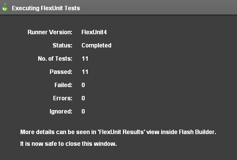
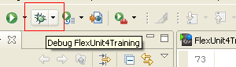
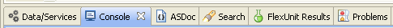

Unit 6 - Working with the Test Fixture
 Download Unit Project Files
Download Unit Project FilesMuch like any significant amount of code that you develop, your tests will eventually begin to show signs of duplicate code. Fortunately, repeat operations can be factored into discrete methods allowing you to create an understandable test fixture. Instantiating objects, running methods, destroying objects, and loading data are all operations that can be factored into methods and classes with the help of FlexUnit 4.x features.
Objectives:
After completing this lesson, you should be able to:
- Use [Before] and [After] metadata to set up and tear down your test fixture
- Use [BeforeClass] and [AfterClass] metadata to set up and tear down portions of the fixture that persist across tests and cases
Topics
In this unit, you will learn about the following topics:
- Setting up a fixture
- Refactoring tests to remove duplication
- Understand Before as an indication of cohesion
- The importance of cleaning up the fixture
Setting up the test fixture
In the last few lessons you have briefly learned about the concept of a test fixture, which is the collection of all of the state required to run a test repeatedly. So far you have created that state in each test by creating objects and setting properties. Unfortunately, this leads to a fair amount of duplication when many tests share the same setup requirements.
FlexUnit offers several ways to factor this repeated setup out into new methods that can be run to create your fixture.
Before methods
FlexUnit allows developers to mark any method inside of a test case with a special metadata tag named [Before]. Methods marked with [Before] metadata run before each test method in the test case class.
- A class may contain any number of
[Before]methods. - Unless an order is specified, the order of multiple methods marked with
[Before]is indeterminate. - Methods must be public, accept no arguments and return void.
- To use, simply decorate the method with
[Before]metadata.
[Before]
public function runMeBeforeEveryTest():void {
}
After methods
The logical opposite of the [Before] metadata is the [After] metadata. Methods marked with [After] run after each test method in the test case class.
- A class may contain any number of
[After]methods. - Unless an order is specified, the order of multiple methods marked with
[After]is indeterminate. - Methods must be public, accept no arguments and return void.
- To use, simply decorate the method with
[After]metadata.
[After]
public function runMeAfterEveryTest():void {
}
Order of Execution
As indicated above Before and After methods run before and after every test. Therefore, the execution of a method with three tests is indicated below:
[Before]
[Test1]
[After]
[Before]
[Test2]
[After]
[Before]
[Test3]
[After]
The setup of your test fixture occurs before each test to ensure the test runs in isolation from others in the test case.
Refactoring to remove duplication
The methods decorated with [Before] and [After] can be used to remove duplicate code from tests. Once extracted to an independent method, this duplicated code no longer needs to be maintained in each test but rather it can be maintained once for all tests in the test case.
Ideally, the majority of your test fixture is established through the use of the Before methods, and destroyed through the use of the After methods. This is particularly important. For a test to truly be a unit test it must be isolated. The use of the Before and After methods ensure that a new test fixture is built, tested against and destroyed for each test.
Walkthrough 1: Creating a Fixture for the Circle Tests
In this walkthrough you will perform the following tasks:
- Create
setMeUp()andtearMeDown()functions for the test case. - Remove circle instantiation from individual tests.
Steps
-
Open the BasicCircleTest.as file from the previous exercise.
Alternatively, if you didn't complete the previous lesson or your code is not functioning properly, you can import the FlexUnit4Training_wt1.fxp project from the Unit 6/Start folder. Please refer to Unit 2: Walkthrough 1 for instructions on importing a Flash Builder project.
[Before] & [After] metadata -
Add a private variable with the name of
circleand a data type ofCircleto the class.public class BasicCircleTest { private static const TOLERANCE:Number = .0001; private var circle:Circle; ... } -
Add a public function named
setMeUp()to the class. Mark the function with a[Before]metadata tag. This function will set thecircleproperty to a newCircleinstance with argumentsnew Point( 0, 0 )and5.[Before] public function setMeUp():void { circle = new Circle( new Point( 0, 0 ), 5 ); }Note, the name of the function is unimportant. It is only the Before metadata that makes this a Before method.
-
Similarly, add another public function named
tearMeDown(). In this case you are going to mark the function with an[After]metadata tag. This function will set the classcirclevariable to null.[After] public function tearMeDown():void { circle = null; } -
Remove the
circlevariable instantiations from each of the test methods. Using the first test as a model:[Test] public function shouldReturnProvidedRadius():void { var circle:Circle = new Circle( new Point( 0, 0 ), 5 ); assertEquals( 5, circle.radius ); }Becomes:
[Test] public function shouldReturnProvidedRadius():void { assertEquals( 5, circle.radius ); }
Running the test case -
After the instantiations have been removed, the test class should read as follows:
public class BasicCircleTest { private static const TOLERANCE:Number = .0001; private var circle:Circle; [Before] public function setMeUp():void { circle = new Circle( new Point( 0, 0 ), 5 ); } [After] public function tearMeDown():void { circle = null; } [Test] public function shouldReturnProvidedRadius():void { assertEquals( 5, circle.radius ); } [Test] public function shouldComputeCorrectDiameter():void { assertEquals( 10, circle.diameter ); } [Test] public function shouldReturnProvidedOrigin():void { assertEquals( 0, circle.origin.x ); assertEquals( 0, circle.origin.y ); } [Test] public function shouldReturnTrueForEqualCircle():void { var circle2:Circle = new Circle( new Point( 0, 0 ), 5 ); assertTrue( circle.equals( circle2 ) ); } [Test] public function shouldReturnFalseForUnequalOrigin():void { var circle2:Circle = new Circle( new Point( 0, 5 ), 5); assertFalse( circle.equals( circle2 ) ); } [Test] public function shouldReturnFalseForUnequalRadius():void { var circle2:Circle = new Circle( new Point( 0, 0 ), 7); assertFalse( circle.equals( circle2 ) ); } [Test] public function shouldGetTopPointOnCircle():void { var point:Point = circle.getPointOnCircle( 0 ); assertThat( point, new CloseToPointMatcher ( new Point( 5, 0 ), TOLERANCE ) ); } [Test] public function shouldGetBottomPointOnCircle():void { var point:Point = circle.getPointOnCircle( Math.PI ); assertThat( point, new CloseToPointMatcher ( new Point( -5, 0 ), TOLERANCE ) ); } [Test] public function shouldGetRightPointOnCircle():void { var point:Point = circle.getPointOnCircle( Math.PI/2 ); assertThat( point, new CloseToPointMatcher ( new Point( 0, 5 ), TOLERANCE ) ); } [Test] public function shouldGetLeftPointOnCircle():void { var point:Point = circle.getPointOnCircle( (3*Math.PI)/2 ); assertThat( point, new CloseToPointMatcher ( new Point( 0, -5 ), TOLERANCE ) ); } [Test(expects="RangeError")] public function shouldThrowRangeError():void { var someCircle:Circle = new Circle( new Point( 10, 10 ), -5 ); } }Other circles, such as
circle2are still instantiated in its respective methods, because it is unique in each case. -
Save BasicCircleTest.as.
-
Run the FlexUnit4Training.mxml file.
If FlexUnit4Training.mxml ran successfully you should see the following output in your browser window:
Figure 1: FlexUnit tests passed
Understanding Before as an indication of cohesion
In general, it is a good practice to group similar tests together. One advantage gained by using Before and After methods is that it quickly becomes apparent when tests do not share the same test fixture.
If you find yourself with methods that need significantly different setup, or are not using much of the setup created in the Before methods, then it is likely that your tests are grouped in a way that is not particularly cohesive.
If your methods successfully share the test fixture, then each new method added to a case requires less duplicate code and hence less effort. Ideally, your tests become a line or two of code and an assertion.
The importance of cleaning up the fixture
Methods marked with [After] are generally intended to mirror the instantiations or creations of the [Before] method. They are responsible for destroying the test fixture to ensure open connections are closed, references and listeners are removed, and objects are made available for garbage collection.
Destroying the fixture correctly lowers the overhead of the test run by ensuring memory leaks are resolved and objects are appropriately collected. Left uncollected during large test runs, this additional overhead can become significant quickly.
BeforeClass and AfterClass Metadata
In rare cases, you may wish to create a portion of the test fixture that remains constant or maintains desired state across all tests. For example, perhaps each of your tests needs to read data from the same large XML file. Rather than reload and reparse this file in each of your [Begin] methods, you might decide to do this once for all tests in a given test case or suite.
FlexUnit allows you to specify static methods to run before the test case (or suite) is instantiated and after the execution is complete. These methods allow you to perform operations that should only occur once per case or suite execution, as opposed to the test by test manipulation that [Before] and [After] offer.
These methods, marked with [BeforeClass] and [AfterClass] metadata, are often used to facilitate tests that connect to a live system, such as a database. However, it is important to note a few pitfalls of this approach.
First, as soon as you use BeforeClass or AfterClass, your tests are no longer completely independent of each other. A side effect of one test has the potential to manipulate the test fixture, creating a situation where the order of tests now influences their success or failure. Therefore, it is best to try to limit items created in BeforeClass to items that will be consumed or read and avoid items which will be manipulated in any way.
Second, if you do find yourself heavily relying upon items created in this way, you may have moved into the territory of integration tests and away from unit tests. Remember, a unit is the smallest piece of testable code. The combination of your code, the network stack, an application server, a database connection, and a database server rarely qualifies.
As items created in BeforeClass are created before the test case constructor is called, they must be static. Unlike items created in Before which have the possibility of being garbage collected, these static items will not. Therefore, the cleanup performed by the AfterClass methods is extremely important.
Static functions marked with [BeforeClass] and [AfterClass] can exist on a test case or a test suite and are run once per execution. The method execution of a three-test hierarchy is illustrated below:
[BeforeClass]
[Before]
[Test]
[After]
[Before]
[Test]
[After]
[Before]
[Test]
[After]
[AfterClass]
Walkthrough 2: Using BeforeClass and AfterClass
In this walkthrough you will perform the following tasks:
- Use
[BeforeClass]and[AfterClass]to demonstrate test hierarchy.
Steps
-
Open the BasicCircleTest.as file from the previous exercise.
Alternatively, if you didn't complete the previous lesson or your code is not functioning properly, you can import the FlexUnit4Training_wt2.fxp project from the Unit 6/start folder. Please refer to Unit 2: Walkthrough 1 for instructions on importing a Flash Builder project.
Using [BeforeClass] & [AfterClass] metadata -
Declare a public static function named
setUpClass(), mark it with[BeforeClass]metadata. In the function body, add a trace statement that merely states "Before Class."[BeforeClass] public static function setUpClass():void { trace( "Before Class" ); } -
Similarly, declare another public static function named
tearDownClass(), mark it with[AfterClass]metadata.[AfterClass] public static function tearDownClass():void { trace( "After Class" ); }
Visualizing test order -
A similar trace statement should be added to the existing
setMeUp()andtearMeDown()methods.[Before] public function setMeUp():void { circle = new Circle( new Point( 0, 0 ), 5 ); trace( "Before Test" ); } [After] public function tearMeDown():void { circle = null; trace( "After Test" ); } -
Finally, add a trace statement to every test method on the first line.
[Test] public function shouldReturnProvidedRadius():void { trace( "Test" ); assertEquals( 5, circle.radius ); } -
Save BasicCircleTest.as
-
Run FlexUnit4Training.mxml file in Debug Mode.
Figure 1: Running in Debug Mode
-
Nothing is going to change about how the tests display in the browser, in this walkthrough we are interested in Flash Builder's Console View, which is usually located at the bottom of the screen.
Figure 2: Console in the tab navigator
-
Take a look at the console view; if all the functions ran to completion, you should see the following show up in order.
Before Class Before Test Test After Test Before Test Test After Test Before Test Test After Test Before Test Test After Test Before Test Test After Test Before Test Test After Test Before Test Test After Test Before Test Test After Test Before Test Test After Test Before Test Test After Test Before Test Test After Test After Class -
Based on the exhibited call hierarchy, you should be able to tell that the
setUpClass()andtearDownClass()functions are being called before the first test method and after the last. Meanwhile, thesetMeUp()andtearMeDown()methods are being called respectively before and after every test.
Summary
Test fixture metadata:
[Before], marks a method that runs before each test.
[After], marks a method that runs after each test.
[BeforeClass], marks a method that is run before the test case or suite is created and run.
[AfterClass], marks a method that is run after the test case or suite has run completely.
[Before] and [BeforeClass] methods can indicate test case cohesion, because tests should be grouped together based on their similarity.
[After] and [AfterClass] methods are useful for cleaning up the fixture and minimizing overhead.
These methods, when used correctly, allow you to factor duplicated code out of the test methods.